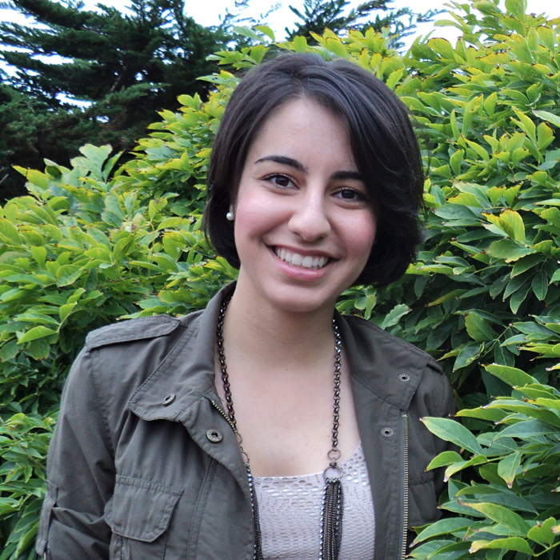
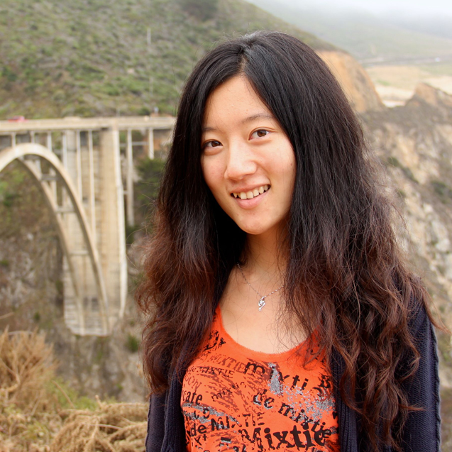
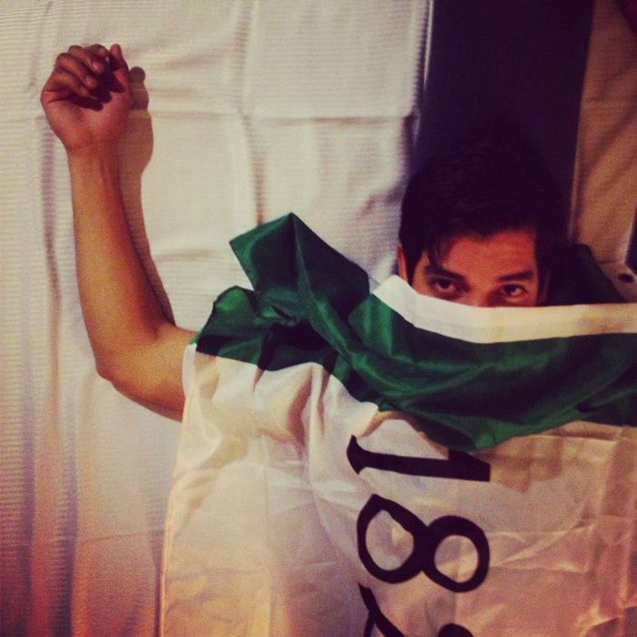

C.K. Hickey
C.K. Hickey is a digital media adventurer who enjoys exploring new journalism formats and tools. He specializes in marrying interactive elements together with reporting and clever writing - whether it be a news package, a game, or a tablet eBook. He's currently completing his final year at the UC Berkeley Graduate School of Journalism. His work has been published in Salon, Current.com, KQED, NPR.org, and the manual of Disney's Hannah Montana: The Movie: The Game.

Stacey Kennelly

Stacey Kennelly is a multimedia journalist and student at the Berkeley Graduate School of Journalism. She received a dual bachelor's degree in news-editorial journalism and public relations from California State University, Chico in 2009. She is currently employed by the Berkeley J-School as an assistant to the director of the magazine program, and she is spearheading the first interactive, multimedia version of the J-School's magazine. She also volunteers for the A2A Alliance, a nonprofit media project that uses multimedia to tell the stories of individuals who have turned their adversity into advocacy.
Christy Khoshaba
Christy Khoshaba is a journalist with experience in local and international reporting. She is a second year student at UC Berkeley’s Graduate School of Journalism where she’s learning the ins and outs of data visualization. And so far, she loves it. Her work has been featured in The New York Times, The Washington Post, Newsweek/The Daily Beast and The Wall Street Journal’s San Francisco One Spot.
John C. Osborn
John C. Osborn is a digital journalist who specializes in data visualization, code crunching, and marrying gaming elements with journalistic storytelling. He loves using data and visuals to explain complex issues and show the relationships between seemingly disparate factors. He currently attends the UC Berkeley Graduate School of Journalism, and he is a recipient of the first-ever Google-AP Scholarship to create a game that would allow the player to run for Congress, while also learning about electoral issues.
Evelyn Xiaoqing Pi
Evelyn (Xiaoqing) is a Chinese reporter and a second-year student at UC Berkeley's Graduate School of Journalism. She previously attended Fudan University in Shanghai, where she interned with The New York Times and Shanghai Television. She also worked for The Phnom Penh Post in Cambodia in the past summer. Xiaoqing aims to marry her passion for international reporting with multimedia story telling.
Erik Reyna
Erik Reyna is a visual journalist who likes to wear different hats. On some days he is rocking out photojournalism, other days he is sitting in front of the computer writing code, and other days, well, he likes to put his boots on and dance. He just began his graduate studies in New Media at UC Berkeley Graduate School of Journalism.
Brittany Schell
Brittany Schell is a reporter for Oakland North and a multimedia student at UC Berkeley's Graduate School of Journalism. She previously studied at American University in Washington, D.C., where she worked as a financial reporting intern for the Bureau of National Affairs. After graduating, Brittany received a fellowship from The Media Consortium to work with OneWorld.net in an editorial and reporting capacity. She has also worked as a multimedia intern with The Oregonian in Portland, Oregon. Brittany is passionate about the potential of interactive, online features to enhance news stories.